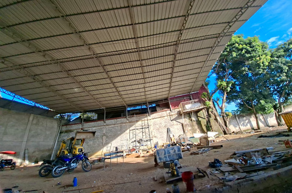
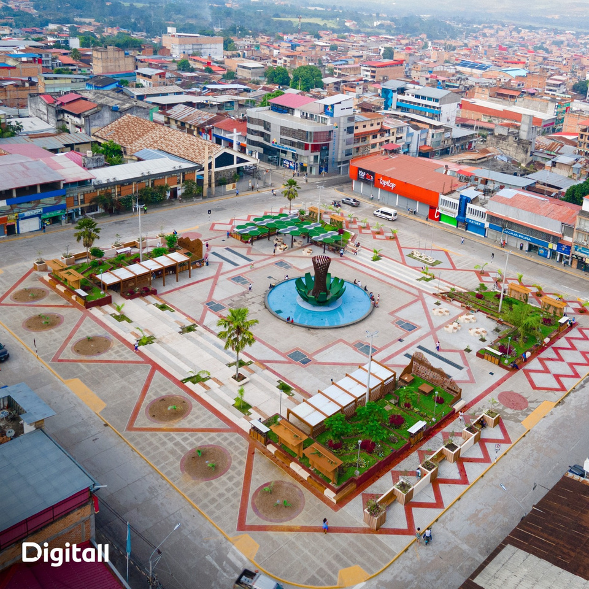
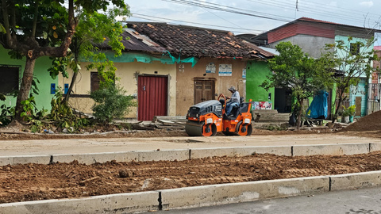
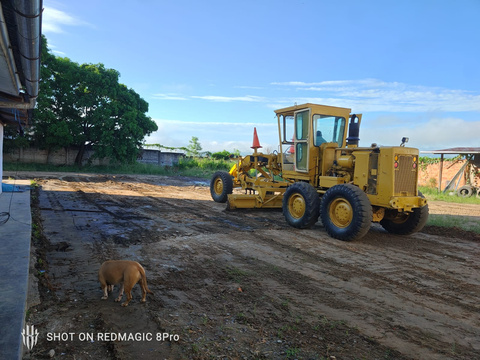
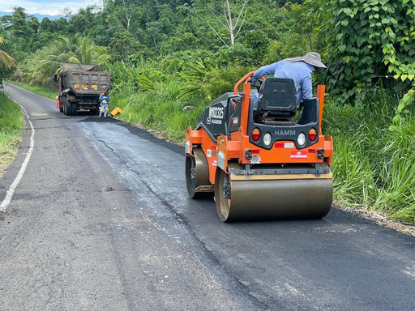
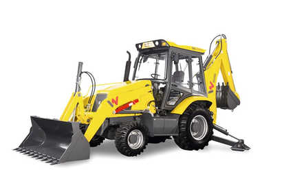
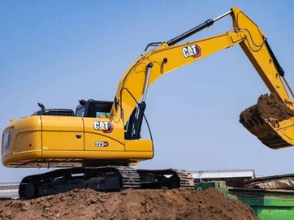

01
Obras viales
Carreteras, asfaltado en caliente o frío, pavimentación urbana, estabilización de taludes y movimiento de tierras.
Consultar servicio →CONSTRUCCIÓN · INFRAESTRUCTURA · EQUIPOS
Proyectos certificados, equipo técnico calificado y una gestión orientada a la calidad, seguridad y cumplimiento.

NOSOTROS
Constructora Anedu S.A.C. nace en marzo de 2023 como una nueva alternativa en la construcción, orientada a atender al sector público y privado mediante una gestión basada en calidad total.
Nuestro enfoque combina especialización, capacitación permanente, integridad, responsabilidad y colaboración para entregar productos terminados de calidad, respetando a la sociedad y el medio ambiente.
Coordinación y colaboración para cada desafío.
Integridad como base de nuestras decisiones.
Mejores prácticas y nuevas tecnologías.
Soluciones eficientes para cada proyecto.
HISTORIA & PROPÓSITO
Desde marzo de 2023, Anedu se proyecta como una empresa exitosa y rentable en la industria de la construcción, con participación en proyectos del sector público y privado.
Una nueva alternativa para la industria de la construcción.
Personal calificado y permanentemente capacitado.
Continuidad del crecimiento y mejores prácticas para la inversión.
MISIÓN
Ser una empresa exitosa dedicada a la actividad de la construcción para el sector público y privado con personal altamente calificado y permanentemente capacitado.
VISIÓN
Estar a la vanguardia de la construcción, basándonos en especialización y capacitación, con calidad total y respeto por el ambiente.
SERVICIOS & SOLUCIONES
El brochure presenta una oferta integrada de obras viales, obras civiles, ingeniería, mantenimiento y alquiler de maquinaria pesada.

Carreteras, asfaltado en caliente o frío, pavimentación urbana, estabilización de taludes y movimiento de tierras.
Consultar servicio →
Creación de carreteras y redes de agua y desagüe para proyectos de infraestructura.
Consultar servicio →
Expedientes técnicos, estudios de preinversión, topografía y ensayos de control de calidad.
Consultar servicio →
Bacheo, recapeo, señalización horizontal y vertical y atención de emergencias en redes viales.
Consultar servicio →
Excavadoras, retroexcavadoras, cargadores, minicargadores y equipos para movimiento de tierras.
Solicitar disponibilidad →
Viviendas, edificaciones comerciales e industriales, remodelaciones, ampliaciones y estructuras metálicas.
Consultar proyecto →EQUIPO DISPONIBLE
LOGROS & CERTIFICACIONES
Según el brochure corporativo, Anedu prioriza los lineamientos de la Organización Internacional de Estandarización y cuenta con cuatro certificaciones internacionales.
Orientación a la calidad y mejora continua.
Compromiso con la conservación del ambiente.
Gestión enfocada en seguridad y salud laboral.
Integridad y transparencia como parte de la gestión.
Una gestión orientada al cumplimiento de estándares.
Especialización y capacitación permanente.
Obras, ingeniería, mantenimiento y maquinaria.
Políticas de desarrollo sostenible y responsabilidad social.
¿POR QUÉ ELEGIRNOS?
Trabajamos bajo una cultura de calidad total y mejora continua.
La seguridad y salud en el trabajo forman parte de nuestro sistema de gestión.
Integridad, responsabilidad y colaboración para construir relaciones duraderas.
Servicios de construcción, ingeniería, mantenimiento y maquinaria pesada.
CONTACTO
Cuéntanos qué necesitas y nuestro equipo podrá orientarte sobre el servicio adecuado.